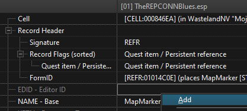
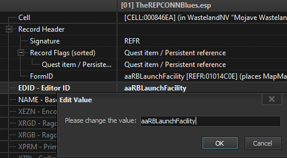
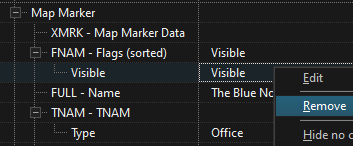

Creating a Separator in Mod Organizer 2
- Right-click in the left pane of MO2 and select Create Separator
- Input New Quests + Locations into the pop-up and select OK
Th3Overseer's Core ESM
Install normally
- Master file for Th3Overseer's quest mods that allows for decisions to carry over between mods
The North Road
Install normally
- Open-ended quest/worldspace mod with many new quests, NPCs, weapons, etc.
Todd JIP CCC Avatar
Install normally
- JIP CCC avatar for Todd, a companion added by The North Road
The REPCONN Blues
Install normally
Manual FNVEdit Editing Required:
- Run FNVEdit through MO2
- Right-click in the Module Selection pop-up and click Select None
- Check the box adjacent to TheREPCONNBlues.esp then hold down left shift and click OK
- Wait for the message Background Loader: finished to appear in the right pane
- Input 01014C0E into the FormID search box in the top left and hit enter
- In the right pane, right-click on the box adjacent to EDID - Editor ID and select Add 
- Right-click on the same box and select Edit
- Enter aaRBLaunchFacility into the pop-up and select OK 
- Adds an Editor ID to the main location for the mod which is required for the next mod
- You must use EXACTLY what the guide says in order for the mod to work
- Save and exit
- A quest mod in which you hunt for rockets, fight robots, and explore a mysterious launch facility
The REPCONN Blues Delayer
Install normally
- Delays the pop-up for The REPCONN Blues until reaching a certain distance from the mod's main location
The Blue Note
Install normally
Manual FNVEdit Editing Available:
- Run FNVEdit through MO2
- Right-click in the Module Selection pop-up and click Select None
- Check the box adjacent to 3DNPC_BlueNote.esm then hold down left shift and click OK
- Wait for the message Background Loader: finished to appear in the right pane
- Input 010118E6 into the FormID search box in the top left and hit enter
- In the right pane, right-click on the second Visible flag and select Remove 
- Makes the map marker not visible until the location is discovered
- Save and exit
- A quest mod about a struggling bar in Freeside with an ownership problem
Afterschool Special
Files to install normally:
- Main File - Afterschool Special Version 2O1
- New quest to refurbish the Goodsprings Schoolhouse into your very own player home
Autumn Leaves
Files to install normally:
- Main File - Autumn Leaves
- Update File - Autumn Leaves Esp V1.031
- Delve into a centuries-old library inhabited by sentient machines and solve Hypatia's mysteries
YUP - Autumn Leaves Patch
Install normally
- Patch for YUP and Autumn Leaves
A Quiet Start - Quest Mod Delayers
Files to install normally:
- Main File - Autumn Leaves Delayer
- Delays the Autumn Leaves pop-up until reaching a certain distance from the mod's main location
Quest Mod Face Textures
Install normally
- Generated face textures for all new NPCs added by the previous quest mods to avoid mismatching skin colors without the need for any INI editing
NOTE: You can still use this even if you only use one or some of the listed quest mods